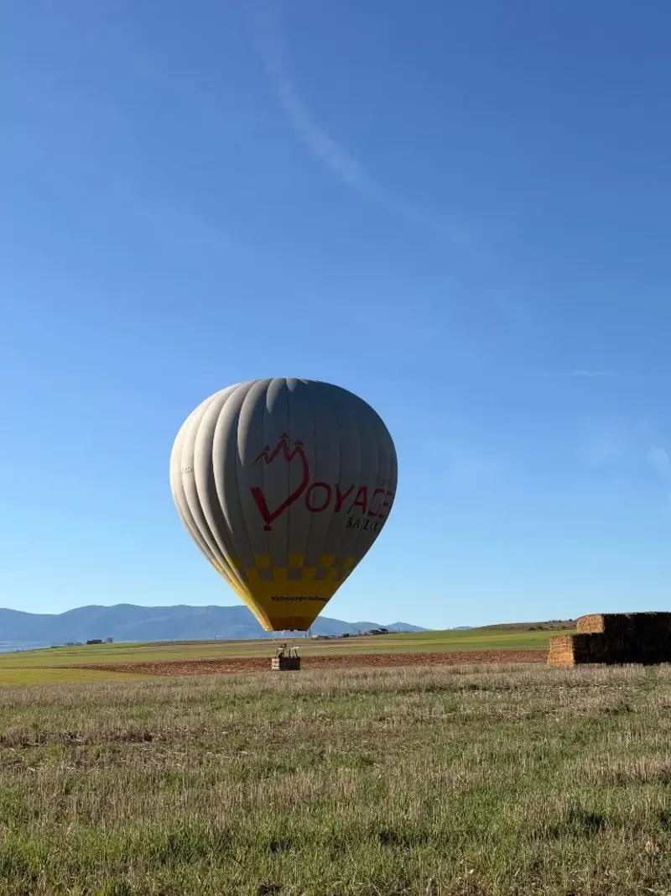

La opción directa para volar en globo aerostático en Segovia
Si buscas globos aerostáticos en Segovia, probablemente quieres comparar operadores, precio, seguridad, horarios y qué se ve desde el aire. Voyager Balloons EU opera vuelos al amanecer desde 120 € por persona en la modalidad Classic Adventure. La experiencia combina el vuelo, la preparación, el seguimiento del equipo de tierra, el aterrizaje, un brindis con cava, diploma y fotos de la tripulación cuando estén disponibles.
Datos clave antes de reservar
Información útil para decidir rápido sin perder el contexto de seguridad y experiencia.
Vuelo Classic Adventure desde 120 € por pasajero. La opción Comfort, con más amplitud por compartimento, cuesta 169 €.
Los vuelos se realizan al amanecer, cuando el aire suele estar más estable y la luz es mejor para disfrutar Segovia desde el cielo.
El vuelo dura aproximadamente 1 hora. La experiencia completa suele ocupar entre 3 y 4 horas.
Preparación, vuelo, seguimiento del equipo de tierra, brindis con cava, diploma y fotos de la tripulación cuando estén disponibles.
Por qué Segovia es uno de los mejores lugares para volar en globo
Un globo aerostático necesita paisaje, amanecer y una lectura limpia del entorno. Segovia reúne esos tres elementos de una manera difícil de igualar. La ciudad aparece compacta, reconocible y monumental: el Alcázar sobresale en la roca, el Acueducto marca la entrada histórica, la catedral domina el casco antiguo y la muralla dibuja el límite de la ciudad medieval.
La experiencia no se parece a mirar Segovia desde un mirador. El globo se desplaza con el viento, sin ruido mecánico constante, y permite ver cómo cambia la ciudad cuando sube la luz. A veces la ruta se abre hacia el casco histórico; otras veces el viento lleva el vuelo hacia el paisaje de campos, caminos y pueblos cercanos. Esa variabilidad es parte de la experiencia: ningún vuelo es una repetición exacta del anterior.
Para muchos viajeros, especialmente los que vienen desde Madrid, el vuelo funciona como el momento principal de una escapada. Después del aterrizaje todavía queda día para visitar el Acueducto, comer en Segovia, entrar al Alcázar o pasear por el casco histórico. Por eso una búsqueda amplia como "globos aerostáticos" suele acabar convirtiéndose en una decisión muy concreta: elegir fecha y reservar el vuelo.

Cómo es la experiencia de un globo aerostático
La actividad empieza antes de despegar y termina cuando el equipo cierra la experiencia en tierra.
El vuelo depende del viento, la visibilidad y la estabilidad atmosférica. El equipo confirma la salida cuando las condiciones son adecuadas para operar con seguridad.
Ver inflar el globo es parte del recuerdo. La vela se extiende, los ventiladores dan forma al envolvente y el quemador termina de levantar la estructura.
El piloto aprovecha distintas capas de viento para navegar. La sensación es tranquila, con una subida progresiva y vistas amplias de Segovia.
El equipo de tierra sigue el vuelo y asiste en el aterrizaje. Después llega el brindis con cava, el diploma y el cierre de la experiencia.
Seguridad: la parte menos visible y más importante
Un vuelo en globo aerostático parece sencillo desde fuera, pero detrás hay decisiones técnicas constantes. La seguridad empieza antes de que el pasajero llegue al punto de encuentro: revisión de previsiones, viento en superficie, viento en altura, visibilidad, posibles térmicas y opciones de aterrizaje. Si una salida no es adecuada, se reprograma.
Esta es una diferencia clave frente a comprar una actividad como si fuera un billete cerrado de transporte. En globo no se fuerza una salida por calendario. La meteorología manda. Por eso conviene reservar con un operador que explique bien las condiciones, confirme el punto de encuentro cuando toca y mantenga una comunicación clara antes de la actividad.
Si quieres profundizar, hemos preparado una página específica sobre seguridad y pilotos. Es una lectura recomendable para quien va a volar por primera vez o para quien compra un billete regalo y quiere entender cómo se toman las decisiones.
Precio y modalidades
La modalidad más directa para vivir los globos aerostáticos en Segovia es Classic Adventure, desde 120 € por persona. Es la opción más buscada para parejas, familias, amigos y viajeros que quieren una experiencia completa sin complicar la reserva.
Si buscas más amplitud durante el vuelo, la opción Comfort cuesta 169 € y limita el compartimento a un máximo de 4 personas. Para ocasiones especiales también existen vuelos privados bajo consulta. Si estás comparando precios, mira no solo el importe: revisa qué incluye la experiencia, cómo se comunica la meteorología, si hay atención directa y cómo se gestiona un cambio de fecha.
La página de vuelo en globo en Segovia reúne la información comercial y las opciones de reserva. Esta guía, en cambio, está pensada para resolver la búsqueda amplia de globos aerostáticos y ayudarte a elegir con criterio.
Globos aerostáticos cerca de Madrid
Segovia es una de las opciones más potentes para quien duerme en Madrid y quiere una experiencia memorable sin viajar lejos.
Muchos pasajeros llegan desde Madrid porque Segovia combina cercanía, paisaje y una visita turística muy completa. El vuelo se realiza temprano, así que después queda margen para desayunar con calma, recorrer el centro histórico, entrar al Alcázar o comer en la ciudad. Para parejas, aniversarios y regalos, esa combinación de amanecer y día completo funciona especialmente bien.
La logística exacta depende de la fecha, del punto de encuentro y de la meteorología. Si vienes desde Madrid, conviene dejar margen y evitar organizar planes demasiado ajustados después del vuelo. La actividad completa puede durar varias horas, y el aterrizaje no siempre ocurre en el mismo punto de despegue porque el globo se mueve con el viento.
Hemos creado una guía específica para quienes buscan vuelo en globo en Segovia desde Madrid. Ahí explicamos cómo encajar la actividad dentro de una escapada, qué esperar del horario y por qué Segovia es una alternativa fuerte frente a otros planes de aventura o turismo premium cerca de la capital.
Si ya tienes claro que quieres reservar, puedes ir directamente al billete Classic Adventure. Si todavía comparas ideas, revisa también nuestra guía de actividades en Segovia para entender cómo el vuelo encaja dentro del día.
Regalar un vuelo en globo aerostático
Un vuelo en globo tiene una ventaja clara como regalo: no es un objeto más. Es una experiencia con historia, fotos, conversación y recuerdo. Funciona bien para cumpleaños, aniversarios, bodas, jubilaciones, celebraciones familiares y sorpresas para dos personas.
La mayoría de compradores reservan para dos pasajeros, aunque también se pueden organizar grupos mayores o vuelos privados bajo consulta. Si el regalo no tiene fecha cerrada, es recomendable explicar a la persona que volará al amanecer y que la fecha definitiva dependerá de meteorología. Esa flexibilidad no es un inconveniente: es parte de hacer bien la actividad.
Diferencias frente a otros vuelos
Al comparar operadores de globos aerostáticos, mira más allá del precio. Valora si la web permite reserva directa, si hay atención por WhatsApp, si se explica la política meteorológica, si la experiencia incluye brindis y fotos, y si el operador comunica con claridad antes del vuelo.
En Voyager Balloons EU trabajamos Segovia como destino principal y orientamos la información a quien compra con intención real: personas que quieren volar, regalar un vuelo o completar una escapada desde Madrid. Por eso esta landing enlaza a páginas más específicas según lo que necesites: reserva inmediata, paseo en globo, regalo, seguridad o planificación desde Madrid.
Cómo elegir operador de globos aerostáticos en Segovia
La comparación correcta no empieza por quién aparece primero, sino por quién te da más claridad antes de pagar.
Cuando una persona busca globos aerostáticos en Segovia suele encontrarse con operadores, agencias, marketplaces y páginas de actividades. Todos pueden parecer similares en una lista de resultados, pero no todos cumplen la misma función. Un operador directo organiza el vuelo, toma las decisiones meteorológicas y coordina al equipo. Un intermediario puede vender la plaza, pero normalmente no pilota la operación ni decide el día exacto de salida.
Por eso conviene comprobar si la web explica quién opera el vuelo, qué incluye el precio, cómo se comunica un cambio por meteorología y qué canal de contacto tendrás si surge una duda. En una actividad sensible al viento, la atención antes del vuelo vale casi tanto como la cesta durante el vuelo.
También es importante revisar la intención de cada página. Una página de venta debe ayudarte a reservar rápido. Una guía como esta debe ayudarte a entender el destino, el precio, la seguridad y las diferencias entre opciones. Si todavía estás explorando, empieza aquí. Si ya has decidido volar en Segovia, pasa a la página de vuelo en globo en Segovia y reserva la modalidad que mejor encaje.
La decisión final debería responder a tres preguntas sencillas: ¿entiendo qué estoy comprando?, ¿sé qué ocurrirá si el tiempo no permite volar?, ¿puedo hablar con alguien del equipo si necesito ayuda? Si las tres respuestas son sí, la reserva será mucho más tranquila.
Preguntas frecuentes sobre globos aerostáticos en Segovia
Dudas habituales antes de reservar o regalar la experiencia.
¿Cuánto cuesta volar en globo aerostático en Segovia?
La opción Classic Adventure cuesta desde 120 € por pasajero. La opción Comfort cuesta 169 € por persona.
¿El vuelo pasa siempre por encima del Alcázar?
El globo se desplaza con el viento, así que no existe una ruta fija garantizada. Segovia ofrece vistas muy potentes incluso cuando la trayectoria cambia.
¿Puedo reservar si voy desde Madrid?
Sí. Muchos pasajeros vienen desde Madrid para volar al amanecer y pasar el resto del día en Segovia.
¿Qué ropa conviene llevar?
Ropa cómoda, calzado cerrado y una capa acorde a la temperatura del amanecer. No hace falta ropa técnica especial.
¿Se puede regalar sin elegir fecha?
Sí, puedes comprar un billete regalo y coordinar la fecha más adelante según disponibilidad y meteorología.
¿Qué ocurre si el tiempo no acompaña?
Si las condiciones no permiten volar con seguridad, se propone una nueva fecha para realizar la experiencia.
Sigue comparando o reserva directamente
Elige la página que mejor encaja con tu intención de búsqueda.
Vive Segovia desde un globo aerostático
Reserva el vuelo Classic Adventure desde 120 € por persona o consúltanos por WhatsApp si quieres regalar, organizar una fecha especial o resolver dudas antes de comprar.